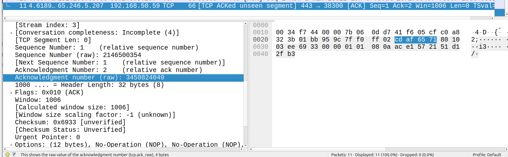
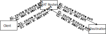
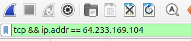

Homework 5: Wireshark And The Network Layer (26 Points)
Chris Tralie
Learning Objectives
- Practice wireshark as a network diagnostic tool
- Identify the role of different components of the IP header
- Examine the use of the "time to live" paradigm
Description / Overview
We're going to take a break from regular coding assignments to practice a bit more with wireshark since it's such a great debugging tool which will help you with subsequent assignments. This will also be an opportunity to see in action some transport and network layer concepts we've been learning.
Before you start this assignment, you should watch Kurose's video on the Internet Protocol part 1 to review IP concepts, and also to examine the IPv4 header in detail (2:35):
Getting Started / What To Submit
At this point, you should have everything you need to get started: python with sockets and wireshark. You should submit a writeup (.docx, .pdf, etc) with answers to the questions below. The blue text indicates that you should provide a screenshot with something highlighted to show that you're following along. For instance, if I asked you for the raw acknowledgement number of a TCP packet, I'd expect to see something like this:
Part 1: The IP Header (8 Points)
Use DNS to find the IPv4 address of a web site of your choice, then use the code below to send UDP messages of varying length to that IP address at port 80:
Filter only by the IP address you're sending to: ip.addr == x.x.x.x (where x.x.x.x is the IP address you're sending to). Then, answer the questions below:
1.1 IP Address (1)
Find and highlight your IP address in the hex dump of the packet
1.2 Ports (1)
In which header does port 80 show up?
1.3 Ports (3)
Send the same message twice in a row. Which fields have changed in the IP header between these two messages? Why? Which fields must stay the same? Why?
1.4 Framents (3)
Modify your code to send 4000 UDP bytes and capture the corresponding packets. As it turns, out this exceeds the "MTU," or the maximum size that the link layer can send out in one go, so the message has to be "fragmented" across multiple packets. Answer the following:
- How do you know by looking at the IP header that this first packet is a fragment? Highlight the hex byte that tells you this.
- How many bytes go over the wire on the first packet? How many of these bytes are actually part of the message you sent from the application layer?
- What is the fragment offset of the second fragment? Why? Highlight this in hex in the IP header.
Part 2: ICMP / Ping (7 Points)
Now issue the following command in your console:
where x.x.x.x is your chosen IP address from before. Let it run for a couple of seconds, then hit CTRL+C to kill it
2.1 Protocol (1)
Look at the first request packet that you send out. What is the value in the "protocol" field of the IP header? How does this compare to that of the UDP messages you sent before?
2.2 Port (1)
What port is the above message sent out on? (Hint: this is a trick question)
2.3 Time To Live! (1)
What is the TTL in the IP header of the first request you sent out? What is the TTL in the corresponding response?
2.4 Time To Die! (2)
Now modify the ping command to set the TTL command to 1:
where x.x.x.x is your chosen IP address from before. You should get a "Time-To-live exceeded" ICMP response. Where is this error indicated in the ICMP header, and what is it in hex? What is the source IP address of this response, and what is that IP address? Why?
2.5 traceroute (2)
Now set your wireshark to capture traffic and issue the command
where x.x.x.x is your chosen IP address from before. Let this run for about 20 seconds, then kill it. As before, filter by the IP address. You should see an interleaved sequence of UDP messages and ICMP messages. Then, sort the messages in ascending order of time, and then by ascending order of Protocol. Scroll down to where the UDP messages start. Wireshark uses a stable sort, so these messages should be in ascending order of time (if they are not, then you may have accidentally clicked something else in the meantime). What pattern do you notice in the TTL of the UDP packets as you move forward in time? Be as specific as you can.
Part 3: Network Address Translation (7 Points)
In this part, I'll be adapting a lab from Kurose/Ross, since it's difficult to capture NAT traffic from inside and outside of the NAT on your own computer. Click here to download a .zip file of traces that they captured themselves. In this part, you'll be looking at the traces NAT_home_side.pcap and NAT_ISP_side.pcap, so open those up in wireshark. In both cases, we'll hone in on a particular HTTP GET request to a server at IP 64.233.169.104, so it will be helpful to apply the following filter:
3.1: Paths / NAT Table (3 Points)
Based on what you see of the 14 messages on either side of the NAT, reconstruct the IP:port pairs of the 4 arrows in the picture below:
Then, fill in the corresponding entry in the NAT table for this communication stream:
| Source Address:Port | External Port | Destination Address:Port |
| A | B | C |
3.2: HTTP GET Request (2)
Consider the packet corresponding to the HTTP GET request on either side of the NAT. Does anything change about the GET request?
In the IP header of this same packet, which of the following fields are changed: Version, Header Length, Flags, Checksum, Time to Live? If any of them have changed, explain why
3.3 3-Way Handshake (2)
Change your filter so that you can see the 3-way TCP handshake that occurs right before the GET request goes out. You can do this by filtering only tcp traffic:
What is the raw sequence number that the client messages start with? What is the raw sequence number that the server messages start with? Are these numbers the same on either side of the NAT? If so, why? If not, why not?
Part 4: IT'S RAAWWWW!! (4 Points)
In the next assignment, we're going to be using "raw sockets," or sockets where we can actually formulate our own network layer headers! But to do so, we need to run python administrator privileges (it would be a bad idea to let non-administrators do this...). Below is some code that sends along a message whose IP header and ICMP chunks I captured in wireshark (Click here to download this code):
4.1 Sending Raw Packets (3)
Change the IP address in src to your IP address. Then, assuming the above code is in a file called raw.py, run it with administrator privileges
If it tells you the command "python" isn't found, then your administrator account does not know where to find it. There are myriad ways to fix this, but a quick hack is to find the absolute path to python on your user account and use that. To do this, type the following into your shell
and take note of the absolute path of the python binary. For instance, mine is /home/ctralie/miniconda3/envs/py311/bin/python. Then, run the program with this absolute path in administrator mode; for instance:
To prove that you're able to do this, run your code and take a screenshot of wireshark showing the message that's sent and the ICMP response that comes back
4.2 Modifying the message (1)
Run the code again, but change the src IP to something that's not your IP. Do you receive an ICMP reply? Why or why not? (There may be a few reasons)